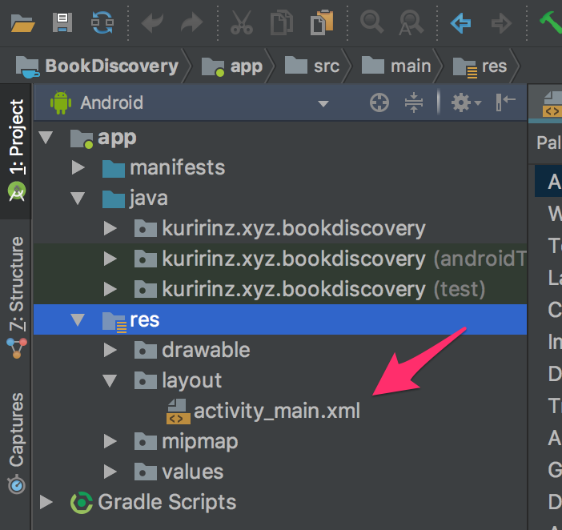
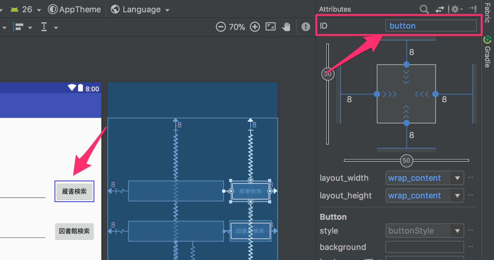
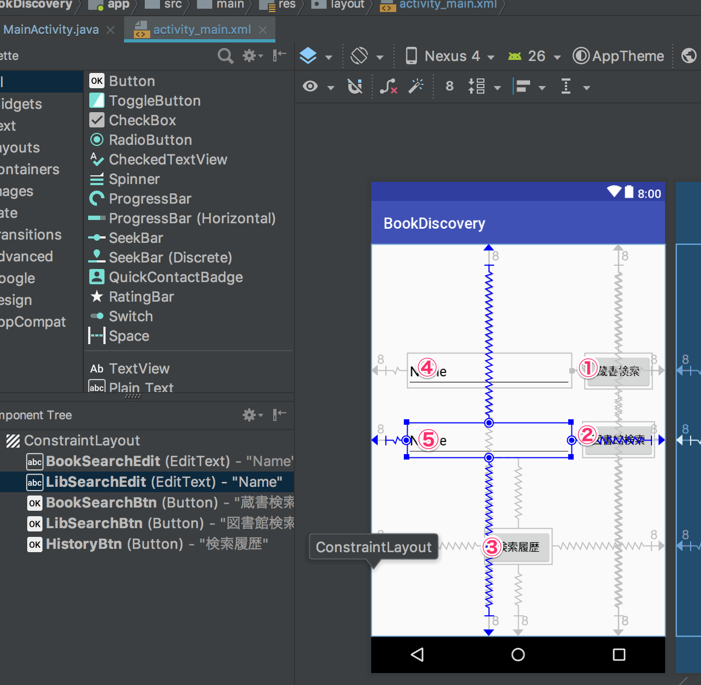
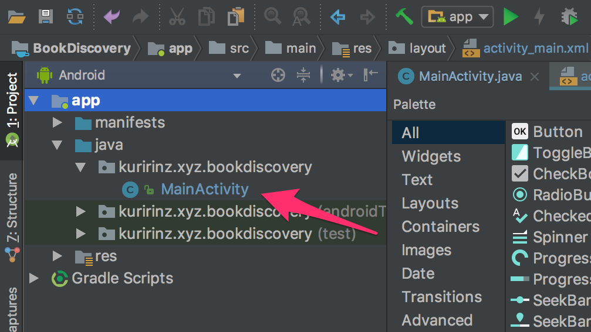
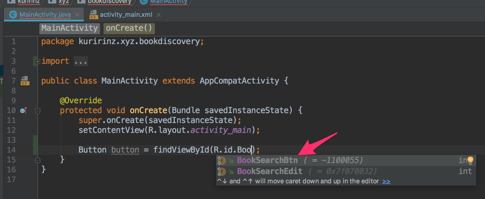
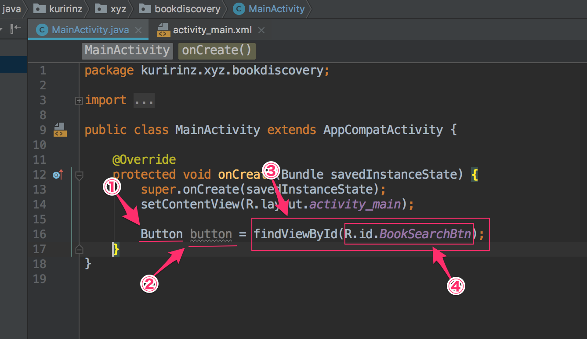

非同期処理とAPIを利用した通信処理ライブラリの実装と確認を行います
当ページでは検索画面のレイアウト完了から蔵書/図書館検索の結果を取得しログに出力するまでを解説します。
前のページで検索画面のレイアウト実装を解説しています
次のページで検索結果の表示、アプリ内データベースの利用に関して解説します。
非同期処理
Androidアプリを開発するのに気を付けなければいけない概念としてThread(スレッド)という概念があります。
スレッドとは
脈絡、筋道。電子メールなどでは、ある一つの話題に関連した投稿の集まり
などの意味合いがありますが、パーティを行う時にLINEで作成するグループなどがスレッドに近いと思います。
プログラミングで使われた場合、ニュアンスとしては似ているのですが、
以下のような捉え方をします
結果を得るための一連のプログラムを処理する領域
Androidアプリの画面が表示されるのもスレッドが画面を表示するという一連のプログラムを処理した結果Android端末にアプリの画面を表示しています。
このスレッドをメインスレッドやUIスレッドと表します、またメインスレッドでの通信処理を禁止されており、REST API通信を使う場合にはメインスレッドに対して別のスレッド=サブスレッドを使ってAPIからデータを取得したりする必要があります。
細かいポイントは実装を進めながら解説していきますので、
まずはxmlレイアウトとjavaプログラムの関連付けからみていきましょう
javaプログラムとxmlレイアウトの関連付け
一つ前のレイアウト作成の内容で作成したxmlレイアウトですが、
今回プログラムを記述する”MainActivity.java”が処理された時に表示されるプログラムがすでに記述されています。
それが以下のコード内矢印に囲まれてるプログラムでMainActivity.javaが処理された時にレイアウトの読み込みを行なっています。
MainActivity.java1
2
3
4
5
6
7
8
9
10
11...
public class MainActivity extends AppCompatActivity {
@Override
protected void onCreate(Bundle savedInstanceState) {
super.onCreate(savedInstanceState);
//↓↓↓↓↓↓↓↓↓↓↓↓レイアウト読み込み↓↓↓↓↓↓↓↓↓↓↓↓
setContentView(R.layout.activity_main);
//↑↑↑↑↑↑↑↑↑↑↑↑↑↑↑↑↑↑↑↑↑↑↑↑↑↑↑↑↑↑↑↑↑↑↑↑↑↑↑
}
}
「おまじない」という言葉で紹介されることもありますが、このコードが書かれていないと画面には何も表示されず、真っ白な画面で止まってしまうので必ず記述しましょう。
さて、上記のコードを書かないと画面が表示されないことがわかりましたが、Buttonをクリックしたときに検索などの処理を行うにはMainActivity.javaでクリックされた時のプログラムを書く必要があります。
そのためには”activity_main.xml”に配置したButtonをMainActivity.javaで探してMainActivity.javaで使うための名前をつける必要がありますので、手順をこれから紹介します。
ButtonやEditTextなどのウィジェットをjavaプログラムから探すにはいくつかの決まった記述方法があります、中でも一番よく使う方法としてfindViewById()を使うことで、”setContentView”で読み込んだレイアウトの中からウィジェットやビューを探すことができます。
まず、ウィジェットが探せるようにユニークID(名称)をつける必要があるので、activity_main.xmlを開きます。

では”蔵書検索”ボタンをjavaプログラムから探すためのユニークID(名称)を設定します、
“蔵書検索”ボタンをクリックしAttributesエリアから“ID”項目を以下のように修正します

button -> BookSearchBtn
このAttributesの“ID”という項目がjavaプログラムから探す時に必要な情報になります。
では他の項目も同じように“ID”項目を変更していきます。
※もし変更前IDが一致していなくても、Noと場所の照らし合わせを正として修正してください

| No. | 変更前のID | 変更後ID |
|---|---|---|
| ① | button | BookSearchBtn |
| ② | button2 | LibSearchBtn |
| ③ | button3 | HistoryBtn |
| ④ | editText | BookSearchEdit |
| ⑤ | editText2 | LibSearchEdit |
IDを変更するとComponent Treeの内容を変更が反映されます
各ウィジェットにIDが設定できたら”MainActivity.java”にプログラム追加してウィジェットを探してMainActivity.javaで使う時の名前をつけていきます。
まずはMainActivity.javaを開きます。

次にfindViewByIdと“activity_main.xml”に設定したIDを使ってButtonウィジェットを探します
コード記述する中でIDの入力中に小さいリスト表示がされると思いますので十字キーの上下を押して選択し、returnキーを押せばプログラムに反映されます。

MainActivity.java1
2
3
4
5
6
7
8
9
10
11
12
13...
public class MainActivity extends AppCompatActivity {
@Override
protected void onCreate(Bundle savedInstanceState) {
super.onCreate(savedInstanceState);
setContentView(R.layout.activity_main);
//↓↓↓↓↓↓↓↓↓↓↓↓↓↓↓↓↓↓追加↓↓↓↓↓↓↓↓↓↓↓↓↓↓↓↓↓↓
Button button = findViewById(R.id.BookSearchBtn);
//↑↑↑↑↑↑↑↑↑↑↑↑↑↑↑↑↑↑↑↑↑↑↑↑↑↑↑↑↑↑↑↑↑↑↑↑↑↑↑
}
}
上記追加した一行でactivity_main.xmlから”BookSearchBtn”（”蔵書検索”ボタン）を探し、MainActivityで使う時の名前を”button”にするという処理を記述することができました。
一行の内訳としては以下です

| No. | 各No.のコードの説明 |
|---|---|
| ① | activity_main.xmlから探してくるウィジェットの型 |
| ② | MainActivity.javaで使う時のユニークな名前 |
| ③ | activity_main.xmlからウィジェットを探すためのメソッド（関数） |
| ④ | activity_main.xmlから探すウィジェット/ビューのユニークID |
これで”蔵書検索”ボタンをxmlレイアウトとMainActivity.javaのプログラムで関連付けることができました。
ボタンクリックアクションの実装
“蔵書検索”ボタンのクリック時に何か処理をする場合のプログラムを記述していきます。
MainActivity.java1
2
3
4
5
6
7
8
9
10
11
12
13
14
15@Override
protected void onCreate(Bundle savedInstanceState) {
super.onCreate(savedInstanceState);
setContentView(R.layout.activity_main);
Button button = findViewById(R.id.BookSearchBtn);
//↓↓↓↓↓↓↓↓↓↓↓↓↓↓↓↓↓↓追加↓↓↓↓↓↓↓↓↓↓↓↓↓↓↓↓↓↓
button.setOnClickListener(new View.OnClickListener() {
@Override
public void onClick(View v) {
Log.d("BookSearchBtn", "onClick: BookSearch Button");
}
});
//↑↑↑↑↑↑↑↑↑↑↑↑↑↑↑↑↑↑↑↑↑↑↑↑↑↑↑↑↑↑↑↑↑↑↑↑↑↑↑
}
次回以降でクリックアクションのプログラムに関して解説しますので、理解できていなくて問題無しです！
文字入力アクションの実装
REST API通信処理
REST APIとはRepresentational State Transfer Application Programming Interfaceの略称で
それぞれ”REST”と”API”で使われることもあります。
REST
Webサービスの設計モデルを表しており、REST APIのURLにHTTPメソッドでアクセスすることでデータの送受信が行えます。
RESTの設計条件として以下が該当します。
- アドレス指定可能なURLで公開されていること
- インターフェースが統一されていること(HTTPメソッドに準じていること)
- ステートレスであること
- 処理結果がHTTPステータスコードで通知されること
API
ソフトウェアコンポーネントが互いにやり取りするのに使用するインターフェース仕様
とあります、